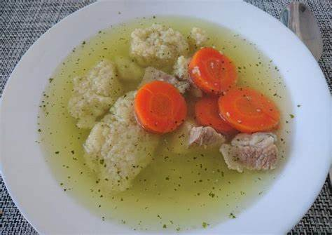
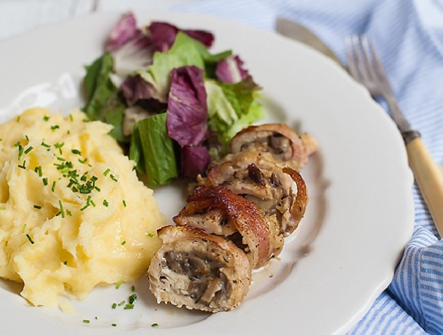
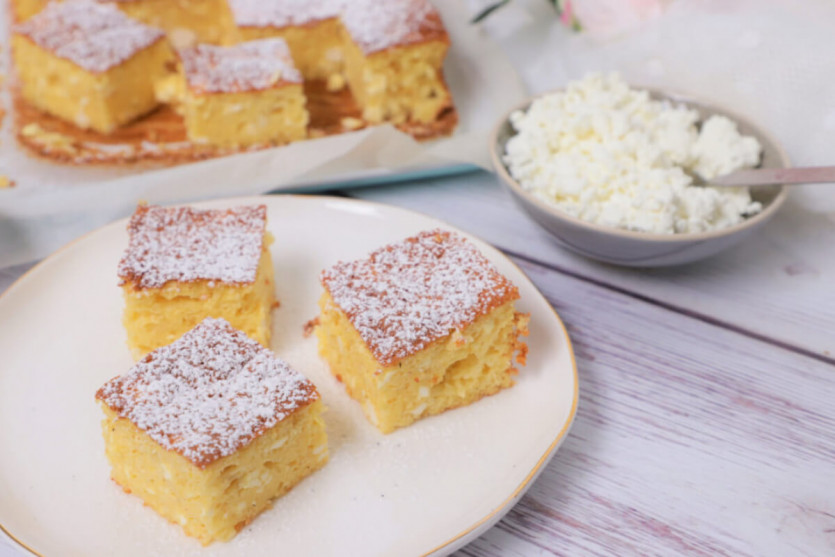

A legjobb receptek egy helyen!
Grízgaluska leves

Hozzávalók
| Alapanyag | Mennyiség |
|---|---|
| Sárgarépa | 20 dkg |
| Fokhagyma | 2 gerezd |
| Vöröshagyma | 1 db |
| Olaj | 2 ek |
| Húsleveskocka | 1 db |
| Tojás | 1 db |
| Búzadara | 4 dkg |
| Őrölt bors, lestyán, petrezselyem, só | ízlés szerint |
Elkészítése
Az egyszerű grízgaluska leveshez megpucoljuk, majd felkarikázzuk a répákat.
A hagymát apró kockákra vágjuk. A zöldségeket a felhevített olajon megdinszteljük, néhány perc után hozzáadjuk a felaprított vöröshagymát, és tovább dinszteljük. Felengedjük kb. 1,2 liter vízzel, beledobjuk a leveskockát, lestyánnal fűszerezzük, és 10 percig főzzük.
Közben a tojást villával habosra verjük egy kis tálban 1 csipet sóval, és hozzákeverjük a darát. Kb. 15 percig pihentetjük, majd két evőkanállal galuskákat szaggatunk a forrásban lévő levesbe.
Tovább főzzük kb. 10 percig, amíg agaluskákmeg nem puhulnak. Apróra vágott petrezselyemmel megszórva forrón kínáljuk a levest.
Gombával töltött csirkemellfilé

Hozzávalók
| Alapanyag | Mennyiség |
|---|---|
| Csiperkegomba | 30 dkg |
| Fokhagyma | 2 gerezd |
| Vöröshagyma | 1 db |
| Kakukkfű | 1 tk |
| Liszt | 1 ek |
| Tejszín | 1 dl |
| Csirkemellfilé | 1 db |
| Olaj | 1 ek |
| Só, bors | ízlés szerint |
Elkészítése
A gombát megmossuk, lecsepegtetjük és feldaraboljuk. A vöröshagymát apróravágjuk, és egy kevés olajon megdinszteljük. Rányomjuka fokhagymát, és megszórjuk a kakukkfűvel. Hozzáadjuka gombát, sózzuk, borsozzuk meg, és 6-8 perc alatt készre pároljuk. Hozzáadjuka liszttel kikevert tejszínt, 1-2 percig forraljuk, majd félretesszük hűlni.
A sütőt 200 fokra előmelegítjük. A csirkemell felét vízszintesen kettévágjuk, majd az így kapott darabokat szintén, de ne vágjuk át teljesen, csak nyissuk szét őket! Kiklopfoljuk, sózzuk, borsozzuk, majd egymás mellé fektetünk 3 szelet bacont, rátesszük az egyik csirkemellet, és a hosszanti oldala mentén rákanalazunk a gombából. Feltekerjük, baconbe bugyoláljuk, és megtűzzük fogpiszkálókkal. Ugyanígy készítjük el a többi húst is.
Egy hőálló tálat vékonyan kikenünk olajjal. Egymás mellé rakjuk a hússzeleteket, és lefedjük alufóliával.50 percig sütjük, majd ellenőrizzük, hogy megpuhultak-e. Ha igen, eltávolítjuk az alufóliát, megöntözzük a húsokat a kisült pecsenyelével, és fólia nélkül pirosra sütjük a csirkemelleket. Burgonyapürével tálaljuk.
Grízes túrós

Hozzávalók
| Alapanyag | Mennyiség |
|---|---|
| Tojás | 5 db |
| Vaníliás cukor | 1 csom |
| Kristálycukor | 15 dkg |
| Búzadara | 10 dkg |
| Túró | 25 dkg |
| Tejföl | 20 dkg |
| Citrom | 1 db |
| porcukor | tálaláshoz ízlés szerint |
Elkészítése
A tojásokat szétválasztjuk. A sárgákat egy nagyobb tálban kikeverjük a kétféle cukorral, a búzadarával, a túróval és a tejföllel.
A citromot megmossuk, a héját vékonyan a tálba reszeljük. Beleforgatjuk a tésztába, majd félretesszük 20 percre.
Közben a tojásfehérjét kemény habbá verjük, és adagonként ezt is a tésztába forgatjuk.
Egy sütőpapírral bélelt 20x30 cm-es tepsibe simítsuk a túrós masszát.
190 fokra előmelegített sütőben 35-40 perc alatt készre sütjük. Ha elkészült, kivesszük a sütőből, és hagyjuk kihűlni. Ezután felszeleteljük, kevés porcukorral meghintve tálaljuk.
Ha van egy jó recept ötleted küld el a receptek@gmail.com címre, és felkerül az oldalra.